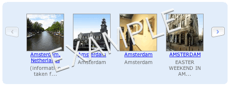

Release Notes & Download Information
Join the ycarousel forum (a Yahoo! group)
Requires the Yahoo! UI Library
The carousel component manages a list of content (HTML UL and LI elements) that can be displayed horizontally or vertically. The content can be scrolled back and forth with or without animation. The content can reference static HTML content or the list items can be created dynamically on-the-fly (with or without Ajax).
In order to make the carousel as flexible as possible, several mechanisms have been separated from the component. This separation of concerns allows the application to control:
Understanding the separation of these three mechanisms from the actual carousel is key to understanding how to adapt it to your solution.
Knowing that you control how and what gets loaded will allow the carousel to be adapted to different data environments. Knowing that navigation controls are not part of the carousel gives you the flexibility to drive the navigation with buttons, sliders, scrollers or whatever navigation you may find useful. Finally, realizing that you can style the carousel in a multitude of ways (combined with the flexibility of what gets put into each item) will allow you to use the carousel for things like scrolling lists, picture galleries, content viewers or advertising panels.
The following examples illustrate various aspects of the components flexibility. The examples do not show the full extent of the flexibility-- just illustrate some of the possibilities.
The Carousel component has been most recently tested and works on these browsers:
To use the Carousel component, include the source files for Carousel and its dependencies in your web page with the script tag:
<script src="yahoo.js"></script>
<script src="event.js"></script>
<script src="container_core.js"></script>
<script src="dom.js"></script>
<script src="animation.js"></script>
<!-- Source file -->
<script src="carousel.js"></script>
The carousel contains a basic CSS stylesheet that must be included. You can include it like this:
<link href="css/carousel.css" rel="stylesheet" type="text/css">
The Carousel object is defined by YAHOO.extension.Carousel.
Adding a carousel is a two step process.
The Carousel expects a very basic HTML markup structure:
<div id="mycarousel" class="carousel-component"> <div class="carousel-clip-region"> <ul class="carousel-list"> <-- LI items go here; you can specify the LI items in the HTML code directly or you can defer the creation of the LI items to later (see the Loading Items section for details.) --> </ul> </div> </div>
The DIV/DIV/UL structure is expected by the carousel component. The LI items can either be statically placed on the page (see Static Load Example) or dynamically loaded (see JavaScript Load Example).
The class names 'carousel-component', 'carousel-clip-region' and 'carousel-list' are important and must be included as illustrated above.
The id of the outermost div will be used when creating the carousel component.
Notice that the carousel does not directly contain the user's prev/next navigation controls. You can nest these controls within the outermost DIV of the carousel or you can place them elsewhere within your markup. To allow the carousel to wire up user events and navigation to your controls, specify them to the carousel component with the prevElement and the nextElement configuration parameters. You can pass an ID, an object or a list of IDs or objects.
For example, you might want to provide an image button for these controls. You might write the HTML like this:
<div> <img id="prev-arrow" class="left-button-image" src="images/left-enabled.gif"/> </div> <div> <img id="next-arrow" class="right-button-image" src="images/right-enabled.gif"/> </div>
Additionally, you will need to pass the configuration parameters prevElement and the nextElement for the previous and next elements. In this example, the configuration parameters would be passed like this (along with other parameters):
var carousel = new YAHOO.extension.Carousel("dhtml-carousel",
{
"prevElement": "prev-arrow",
"nextElement": "next-arrow",
});
If you need more than one element controlling the navigation, you can pass a list of ids or objects.
// illustrates getting object reference and passing to nextElement property
var nextText = YAHOO.util.Dom.get("next-text");
var nextArrow = YAHOO.util.Dom.get("next-arrow");
var carousel = new YAHOO.extension.Carousel("dhtml-carousel",
{
"prevElement": ["prev-arrow", "prev-text"],
"nextElement": [ nextArrow, nextText],
});
When creating a new a Carousel object, you will need to pass the ID of the top level DIV from your HTML markup (in this example, you would pass 'mycarousel'
When creating LI items statically, make sure you name the ids of each LI item to match. Each LI item should follow the pattern of CAROUSEL_ID + '-item-' + INDEX_OF_LI. If the carousel id is 'mycarousel' then each item will be named: 'mycarousel-item-1', 'mycarousel-item-2', and so on.
var carousel = new YAHOO.extension.Carousel("mycarousel",
{
"numVisible": 4,
"animationSpeed": .25,
"scrollInc": 3,
"navMargin": 40,
"prevElement": "prev-arrow",
"nextElement": "next-arrow",
"loadInitHandler": loadInitialItems,
"loadNextHandler": loadNextItems,
"loadPrevHandler": loadPrevItems,
"prevButtonStateHandler": handlePrevButtonState
}
);
The carousel constructor accepts configuration properties as an optional second argument. Configuration properties are set when an object is instantiated. These properties are passed to the constructor as an object literal. For example, if you wanted the carousel to be rendered with 4 items visible, you would do the following:
var carousel = new YAHOO.extension.Carousel("mycarousel",
{
"numVisible": 4
};
Configuration properties are accessible at runtime through the configuration object's getProperty and setProperty methods. For example the following would grow the number of visible items shown by one:
var numVisible = carousel.cfg.getProperty("numVisible");
carousel.cfg.setProperty("numVisible", numVisible+1);
Here are the available properties:
| Property | Default Value | Description |
| firstVisible | 1 | Sets which item should be the first visible item in the carousel. |
| numVisible | 3 | The number of items that will be visible. |
| scrollInc | 3 | The number of items to scroll by. |
| size | 1000000 | The upper hand for scrolling in the 'next' set of content. Set to a large value by default (this means unlimited scrolling.) |
| wrap | false | Specifies whether to wrap when at the end of scrolled content. Only has effect when the size attribute is set. |
| orientation | horizontal | Either "horizontal" or "vertical". Changes carousel from a left/right style carousel to a up/down style carousel. |
| navMargin | 0 | The margin space for the navigation controls. This is only useful for horizontal carousels in which you have embedded navigation controls. The navMargin allocates space between the left and right margins (each navMargin wide) giving space for the navigation controls. |
| animationSpeed | .25 | The time (in seconds) it takes to complete the scroll animation. If set to 0, animated transitions are turned off and the new page of content is moved immdediately into place. |
| animationMethod | YAHOO.util.Easing.easeOut | The YAHOO.util.Easing method. |
| animationCompleteHandler | null | JavaScript function that is called when the Carousel finishes animation after a next or previous nagivation. Only invoked if animationSpeed > 0. Two parameters are passed: type (set to 'onAnimationComplete') and args array (args[0] = direction [either: 'next' or 'previous']). |
| autoPlay | 0 | Specifies how many milliseconds to periodically auto scroll the content. If set to 0 (default) then autoPlay is turned off. If the user interacts by clicking left or right navigation, autoPlay is turned off. You can restart autoPlay by calling the startAutoPlay(). If you externally control navigation (with your own event handlers) then you can turn off the autoPlay by callingstopAutoPlay() |
| loadInitHandler | null | JavaScript function that is called when the Carousel needs to load the initial set of visible items. Two parameters are passed: type (set to 'onLoadInit') and args array (args[0] = start, args[1] = last indices). |
| loadNextHandler | null | JavaScript function that is called when the Carousel needs to load the next set of items (in response to the user navigating to the next set.) Two parameters are passed: type (set to 'onLoadInit') and args array (args[0] = start, args[1] = last indices). |
| loadPrevHandler | null | JavaScript function that is called when the Carousel needs to load the previous set of items (in response to the user navigating to the previous set.) Two parameters are passed: type (set to 'onLoadInit') and args array (args[0] = start, args[1] = last indices). |
| prevElement | null | The element ID (string ID) or element object of the HTML element that will provide the previous navigation control. Can be a list (array) of element IDs or element objects. |
| nextElement | null | The element ID (string ID) or element object of the HTML element that will provide the previous navigation control. Can be a list (array) of element IDs or element objects. |
| prevButtonStateHandler | null | JavaScript function that is called when the enabled state of the 'previous' control is changing. The responsibility of this method is to enable or disable the 'previous' control. Two parameters are passed to this method: type (which is set to "onPrevButtonStateChange") and args, an array that contains two values. The parameter args[0] is a flag denoting whether the 'previous' control is being enabled or disabled. The parameter args[1] is the element object derived from the prevElement parameter. |
| nextButtonStateHandler | null | JavaScript function that is called when the enabled state of the 'next' control is changing. The responsibility of this method is to enable or disable the 'next' control. Two parameters are passed to this method: type (which is set to "onPrevButtonStateChange") and args, an array that contains two values. The parameter args[0] is a flag denoting whether the 'next' control is being enabled or disabled. The parameter args[1] is the element object derived from the nextElement parameter. |
The standard markup references three style class names that control the basic layout & style of the carousel. This illustration shows the area each style class is applied to.
The carousel.css file creates a standard layout and style for the carousel. To override simply add your own CSS file and override the desired styles. To get an idea of the flexibility of the styles you can apply, reference the example pages above.
The standard carousel.css file is divided into two sections. The first section defines behavior that is integral to the carousel behavior (core behavior.) It controls things like clipping, positioning, initial visibility and z-ordering.
.carousel-component {
position:relative;
overflow:hidden; /* causes the clipping */
visibility:hidden; /* component turns it on when first item is rendered */
}
.carousel-component ul.carousel-list {
width:10000000px;
position:relative;
z-index:1;
}
.carousel-component .carousel-list li {
float:left;
list-style:none;
overflow:hidden;
}
/**
* VERTICAL CAROUSEL DEFAULTS
**/
.carousel-component .carousel-vertical li {
float:none;
margin-bottom:0px;
/* Force the LI to respect the HEIGHT specified */
overflow:hidden;
display:block;
}
/* For vertical carousel, not set, width defaults to auto */
/* Note if you explicitly set width to auto, this might cause */
/* problems with Safari */
.carousel-component ul.carousel-vertical {
}
.carousel-component .carousel-clip-region {
overflow:hidden; /* Secret to the clipping */
margin:0px auto;
position:relative;
}
The following styles may be of interest to override fonts, colors, margins, padding, etc. Note that the .carousel-component .carousel-list li selector must have its width parameter configured for the carousel to determine the correct width for each item in the list.
| Class Selector | Default Value | Description |
| .carousel-component | background:#e2edfa; padding:0px; -moz-border-radius:6px; color:#618cbe; | The style of the overall carousel component. Controls the outermost DIV. |
| .carousel-component ul.carousel-list | margin:0px; padding:0px; | The style of UL list (which contains the items being scrolled.) |
| .carousel-component .carousel-list li | text-align:center; margin:0px; padding:0px; font:10px verdana,arial,sans-serif; color:#666; | The style of each individual item managed by the carousel (LI). Be sure to specify the width of individual elements by setting the width attribute for this selector. The width should be set the width of the contents plus any margin or paddings specified for elements within the LI item. |
| .carousel-component ul.carousel-vertical | The style of UL list for vertical carousels. | |
| .carousel-component .carousel-vertical li | The style of each individual item managed by a vertical carousel (LI). For vertical carousels, be sure to specify the height of individual elements by setting the height attribute for this selector. The height should be set the width of the contents plus any margin or paddings specified for elements within the LI item. |
The Carousel component has several convenience methods for external manipulation.
| Method | Parameters | Description |
| scrollNext() | none | Simulates a next button event. Causes the carousel to scroll the next set of content into view. |
| scrollPrev() | none | Simulates a previous button event. Causes the carousel to scroll the previous set of content into view. |
| scrollTo(itemNum) |
| Scrolls the content to place itemNum as the start item in the view (if size is specified, the last element will not scroll past the end.). Uses current animation speed & method. |
| moveTo(itemNum) |
| Moves the content to place itemNum as the start item in the view (if size is specified, the last element will not scroll past the end.) Ignores animation speed & method; moves directly to the item. Note that you can also set the firstVisible property upon initialization to get the carousel to start at a position different than 1. |
| clear() | Clears all items from the list and resets to initial state just prior to loading items. | |
| reload([numVisible]) | Optional parameter: numVisible. If set, the carousel will resize on the reload to show numVisible items. | Clears all items from the list and calls the loadInitHandler to load new items into the list. The carousel size is reset to the original size set during creation. |
| show() | Sets the display style to block (making the carousel visible) and recalculates the size of the carousel based on its current contents. | |
| hide() | Sets the display style to none (making the carousel hidden). | |
| calculateSize() | Will recalculate the size of the carousel based on the current configuration and content. | |
| getItem(index) | index: for the carousel item | Returns the LI carousel item at index. Indices start at one (1). |
| addItem(index, innerHTML) | Returns <LI> created.
| Pass the innerHTML of an <li> element containing the markup for this item's content. |
| insertBefore(index, innerHTML) |
| Pass the innerHTML of an <li> element containing the markup for this item's content. |
| insertAfter(index, innerHTML) |
| Pass the innerHTML of an <li> element containing the markup for this item's content. |
| startAutoPlay([interval]) |
| If autoPlay has been stopped (by calling stopAutoPlay or by user interaction), you can start it back up by calling startAutoPlay(). |
| stopAutoPlay() | Stops autoplay. Useful for when you want to control what events will stop the autoplay feature. Call startAutoPlay() to restart autoplay. |
There are three moments that the Carousel component can create LI items for the content:
| Event | Handler | Description |
| Load Initial | loadInitHandler | The configuration parameter loadInitHandler defines the JavaScript function to call when the carasoul needs to load the initial set of items. The parameters passed to this function are: type and args. The type is set to to "onLoadInit". The args is an array of two values: start and last which define the first and last indices to load. Will also be called when the reload() method is invoked. |
| Load Previous | loadPrevHandler | The configuration parameter defines the JavaScript function to call when the carasoul needs to load a set of items when navigating to the previous set. The parameters passed to this function are: type and args. The type is set to to "onLoadPrev". The args is an array of two values: start and last which define the first and last indices to load and alreadyCached which indicates whether the items have already been loaded. If they have already been cached, you can choose to not reload and just use the cached items for the scroll operation. |
| Load Next | loadNextHandler | The configuration parameter defines the JavaScript function to call when the carasoul needs to load a set of items when navigating to the next set. The parameters passed to this function are: type and args. The type is set to to "onLoadNext". The args is an array of three values: start and last which define the first and last indices to load and alreadyCached which indicates whether the items have already been loaded. If they have already been cached, you can choose to not reload and just use the cached items for the scroll operation. |
Carousel contains a convenience method, addItem that can be passed the index of the item to create and the innerHTML string of the item to be created. This method creates and adds the innerHTML only when an item has not been seen before. If you need a different strategy, simply write your own method to add items.
In the carousel_dhtml_load_bounded example the following methods were defined to load images from an array during the initial load, next and previous events:
var fmtItem = function(imgUrl, url, title) {
var innerHTML =
'<a href="' +
url +
'"><img src="' +
imgUrl +
'" width="' +
75 +
'" height="' +
75+
'"/>' +
title +
'</a>';
return innerHTML;
}
var loadInitialItems = function(type, args) {
var start = args[0];
var last = args[1];
load(this, start, last);
}
var loadNextItems = function(type, args) {
var start = args[0];
var last = args[1];
var alreadyCached = args[2];
if(!alreadyCached) {
load(this, start, last);
}
}
var loadPrevItems = function(type, args) {
var start = args[0];
var last = args[1];
var alreadyCached = args[2];
if(!alreadyCached) {
load(this, start, last);
}
}
var load = function(carousel, start, last) {
for(var i=start; i<=last; i++) {
carousel.addItem(i, fmtItem(imageList[i], "#", "Number "+i));
}
}
Though not really a load technique, you can just create the full HTML markup including all of the <li> items. If you take this approach, you will not need to specify a loadInitHandler, loadNextHandler, or a loadPrevHandler since the content already exists.
This approach is especially helpful for HTML mockups that need to incorporate a carousel. Just provide the mockup data as <li> items in the markup and instantiate the carousel. You will most likely need to set the size attribute to match the number of <li> items.
For an example of managing content in this manner see the Static HTML demo.
You can also reload the carousel which will remove all current items, reset values back to initial state and trigger the loadInitHandler to load the initial set of your choosing.
When the previous control needs to be enabled or disabled, a JavaScript handler will be called. The handler is defined with the prevButtonStateHandler configuration parameter. Two parameters are passed to this method: type (which is set to "onPrevButtonStateChange") and args, an array that contains two values. The parameter args[0] is a flag denoting whether the previous control is being enabled or disabled. The parameter args[1] is the element object of the previous control calculated from the prevElement configuration parameter.
When the next control needs to be enabled or disabled, a JavaScript handler may be called. The handler is defined with the nextButtonStateHandler configuration parameter. Two parameters are passed to this method: type (which is set to "onNextButtonStateChange") and args, an array that contains two values. The parameter args[0] is a flag denoting whether the next control is being enabled or disabled. The parameter args[1] is the element object of the next control calculated from the nextElement configuration parameter.
Several parameters control the animated transitions while moving content left or right.
Use the animationSpeed configuration parameter to control the speed of animation. The value is the time it takes to complete the animation. You can specify a 0 (zero) value to turn off all animation. By default, the animationMethod is set to YAHOO.util.Easing.easeOut. Any valid animation method may be used. Finally, the scrollInc determines how many elements will be scrolled on each transition.
Here are some of the frequently asked questions about the carousel
Changing either the ID of the carousel DIV element or changing the ID name passed to the carousel causes the carousel not to display.The DIV ID and the name passed to the carousel must match. In addition, if the LI items are being supplied directly in the HTML, make sure each LI item matches the name as well. If the id name is 'mycarousel', then the LI items would need to have the IDs: 'mycarousel-item-1', 'mycarousel-item-2', and so on.
I have multiple carousels but only show one at a time (as in a tabview or through some other hide/show mechanism). When I make the other carousels visible they have no visible content.You will need to use the show() method to cause the carousel to become visible and recalculate its size. In the case of inside a tab, you can just call calculateSize() since the carousel is already set to display:block when the parent (tab panel) is made visible.
I see your examples that randomly load pictures in the carousel, how do I do that sequentially?This is a basic JavaScript style question, but I have received this question in various forms about a dozen times... so here goes. In a few of the examples I use the JavaScript random function to calculate which index to use. Just remove the call to random() and use the index directly.
Is it possible to have the thumbnails lead to the full image either on the same page or another page?Sure, the carousel items are just HTML. So you can wrap your image in an anchor tag which can be set to point to the full image. For showing the image on the same page you will need to add an event listener to the LI item. Do this when items are added to the carousel. The addItem() method returns the created LI. Use the YAHOO.util.Event.addListener to add a listener to the LI. In the listener method show the full image in another area of the page.
I would like to display something other than images in my carousel.Each LI is populated with any HTML you desire. When your loadInitHandler, loadNextHandler and loadPrevHandler are invoked, add the appropriate HTML that defines what each item will look like. You can see an example with just paragraphs in the Module Scrolling example.
I would like to have the 5th item show up as the first item visible. Is there a way to do that?Yes, either set the firstVisible property when instantiating the carousel or set it later (carousel.cfg.setProperty("firstVisible", 5) OR carousel.moveTo(5))
See the Updates page for download instructions
Your ideas are welcome! Just send me mail, b dot scott at yahoo dot com.
This is not complete, just a few that I had time to jot down. If you have an example, please email me and I will post it here.
The Carousel component was written by Bill Scott. Special thanks to Dustin Diaz for providing an example of the correct way to structure the HTML to get around some annoying layout issues. Also thanks to Matt Sweeney for pointing out a way around a Firefox/IE discrepency when adding a temporary node. And special thanks to the Yahoo! User Interface team for the excellent Y!UI library.
Other contributors have been Dan Hobbs (CNet) for ideas about prebuilding elements for out of order loading; Yuval Karjevski for initial contribution for insert items (and soon remove items); Lawrence Carvalho for many ideas including making the carousel accessible (future version!). Also thanks for ideas & bug reports & questions from: Alexander Buze, Andrew Wong, Anders Pedersen, Bernie Ott, Bill Bizeau, Brad Flynn, Bram Whillock, Brent Engels, Brett Williams, Burc Hasergin, Chris Maxwell, Chris McShane, Christian Taylor, Christopher Avore, Daniel Matienzo Iriarte, Daniel Sims, David Ehlers, David Lindquist, Dethe Elza, Einar Paul Qvale, Emmanuel Vanasse, Fred Welterlin, Guy Katz, James Bennett, Jean Vence, Jerry Lau, Johan Baaij, Johan Vandenrym, Kaylan Varma, Kirill Sheynkman, Kurt Lidl, Laine, Marek Solneman, Mathias Brodala, Matthieu Fauveau, Mattia Battistich, Max Case, Meirion Williams, Michael Dowling, N. Drew Stainton, Noah Tsusui, Patrick Tran, Peter Foti, Robert Ames, Rodrigo Diniz, Russ Bombardieri, Sam Allen, Sebastian Grabert, Stephen Clark, Steve Yates, Soren Pedersen, Tim Tully, Tom Lyczko, Tony Hirst, Ave Wrigley, Yuval Karjevski, Claude Jones and others.